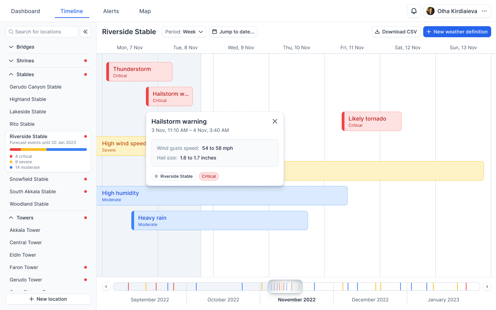
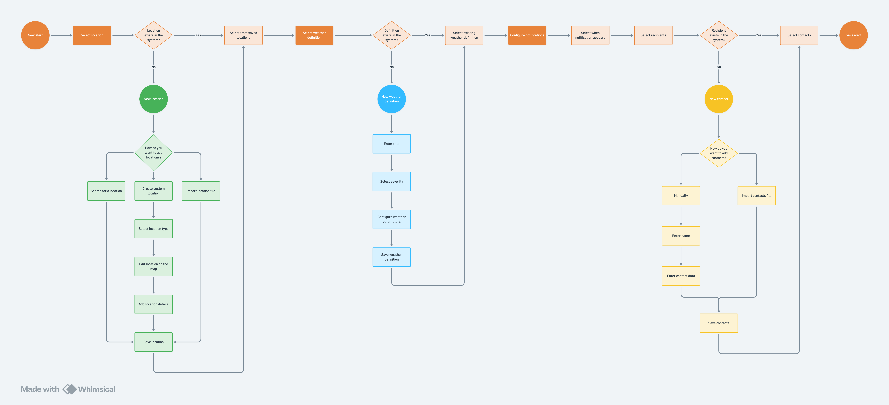
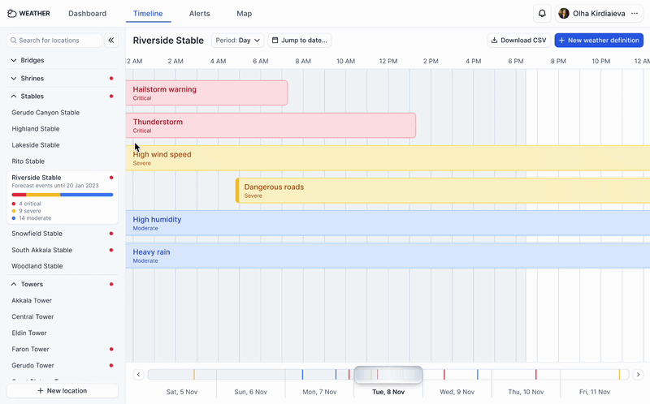
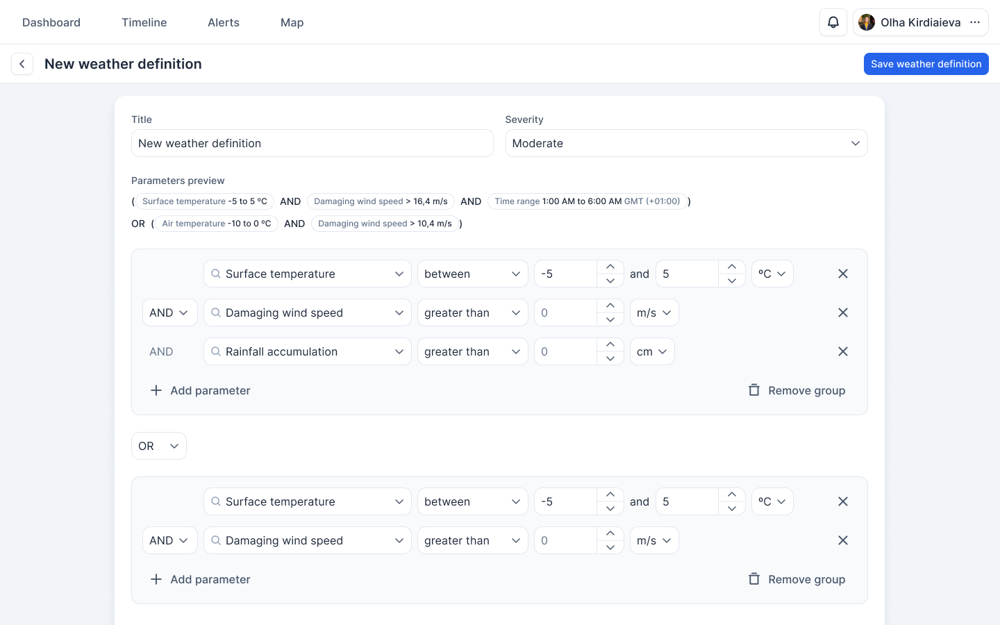
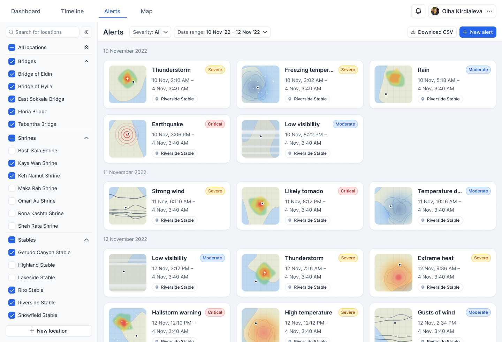

MVP design of a weather monitoring SaaS
Building a new product for the existing API of a weather intelligence company with a 50K+ customer base.

Context
From API to UI
The client came to our agency with a request to design a B2B weather monitoring SaaS that helps customers protect their physical assets from extreme weather. The client had an existing API offering, but it wasn’t suitable for small customers with no development team. My goal was to create a user-friendly interface that would allow the client to provide their services to a larger audience.
Process
Top-down architecture approach
The client has not agreed to user interviews, so instead I used their domain knowledge and insights from desk reseach.
After gathering the initial requirements, I defined the information architecture and built a user flow that helped me prioritize features and lay a foundation for the wireframes. Users can set up alerts to get notified about extreme weather at selected locations. I used a top-down approach for the alert setup, so users can create all necessary data objects during the workflow without interruptions.

Solution
Weather events at a glance
The core element of the system is the timeline. It allows users to see an overview of all weather events at the selected location.
To make design decisions easy to discuss and iterate on, I created a highly detailed Figma prototype showcasing all interactions. The client then presented it to their team and used it as the basis for feedback. I used the smart animate feature in Figma to visualize how the weather events move as users interact with the timeline.

Advanced customization
The system is highly customizable and allows users to create custom weather definitions depending on their needs. They can build complex conditions to define which weather events are relevant for them.

The weather definitions can be combined with locations and notifications to create an alert which will be triggered if a matching weather event is forecasted. The prototype was validated through internal testing and detailed client feedback.

Outcome
Scalable MVP ready for development
As a result of the project, I delivered a fully documented UX prototype. Using the client's internal domain knowledge, I helped them decide on features to include in the MVP and built a scalable design that can be expanded with new features. The client was fully satisfied and came back to the agency with follow-up projects.
... helped my company tease out a solid design from our thoughts and ideas including our internal domain knowledge. The designers ... quickly grasped our goals and our target market. They "got it" very fast and were able to translate our knowledge and needs to a workable design with minimal back and forth.